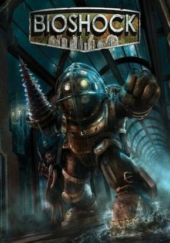

Bioshock 1 |
||
|---|---|---|
|  | Sinopsis: BioShock está ambientado durante una ucronía del año 1960, en Rapture, una ciudad distópica ficticia bajo el agua. El jugador se entera de la historia de Rapture a través de grabaciones de audio mientras explora la ciudad.26 Rapture fue prevista por el magnate Andrew Ryan, el cual quería crear un estado laissez faire para escapar de la autoridad política, económica y religiosa cada vez más opresiva en tierra. |
Desarrollador:2K Boston Plataformas: PC, Xbox 360, PlayStation 3 Año: 2007 Duracion:20 horas aprox Pais:Estados Unidos |
Criticas Profesionales:Jacqueline CarreraBioshock es un gran juego de shooter con toques de suspense pero que no termina de convencer su trama, aun así esta bastante bien y lo recomiendo para los que les gustan las tramas oscuras y los juegos de este tipo. |
Trailer |
Obtener:AlquilarComprar |
Registrate/Iniciar Sesion